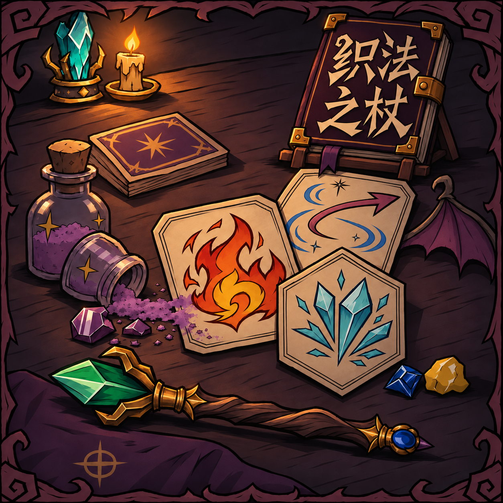
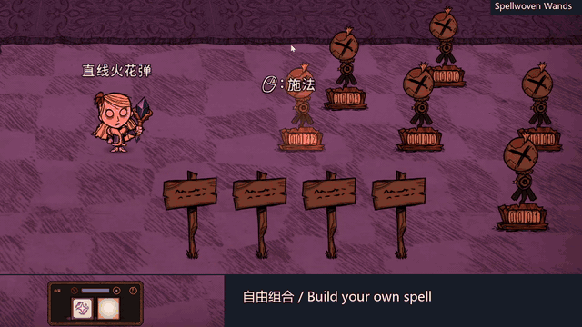
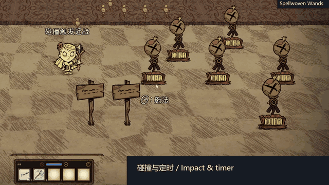
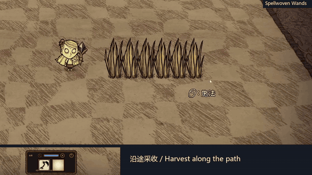
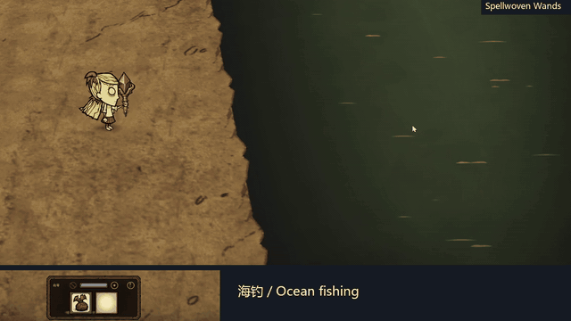
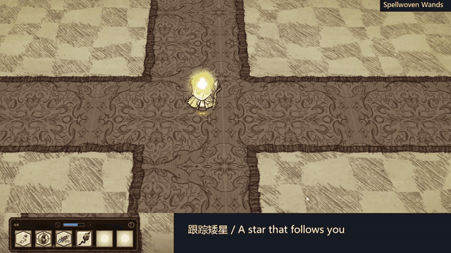
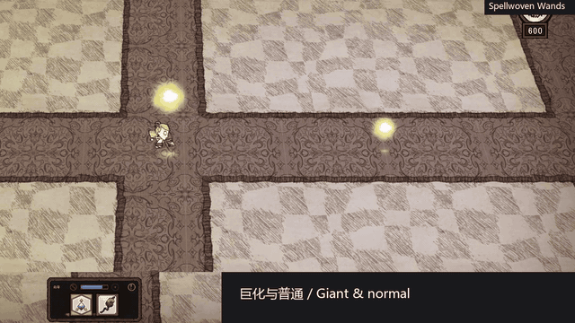
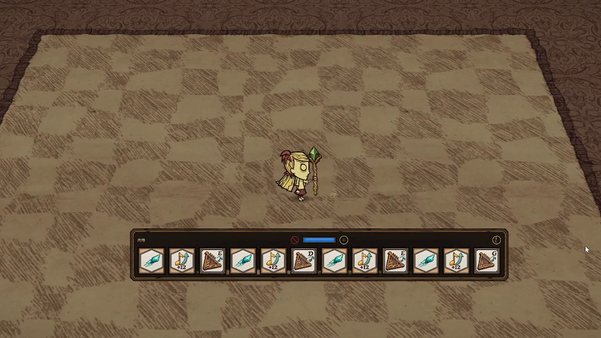
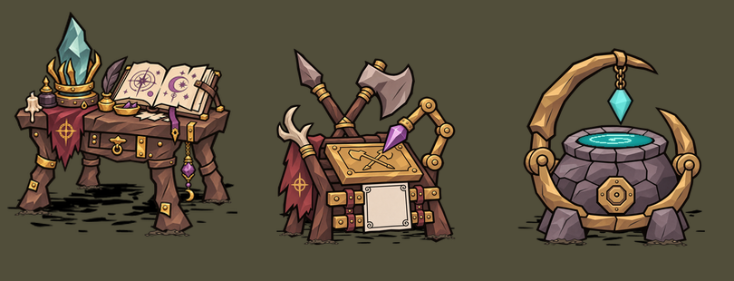
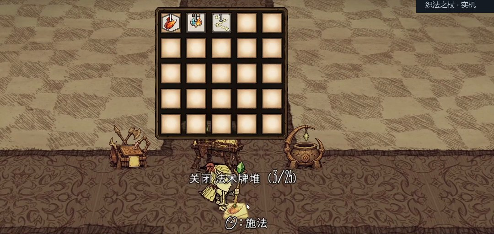

把 Noita 式法杖编排做进饥荒：自制 Mod《织法之杖》
大家好，来分享一下我做的《饥荒联机版》Mod：织法之杖。
灵感来自《Noita》的法杖编排：收集不同属性的法杖，把法术卡装进去，再用追踪、多重施法、碰撞触发这些效果，搭出自己的组合。打完怪换一套卡，还能收草、海钓，甚至在营地里弹琴。
工坊已经可以订阅，搜「织法之杖」即可。也把链接放在前面，方便感兴趣的盒友找：

制作思路：让玩家自己决定法杖怎么用
我想做的是一套可以反复折腾的法术组合玩法。同样一张火花弹，前面加追踪，就能拐弯找目标；加上多重施法，又能和其他法术一起发射。换卡、调整顺序，再试一发，这个过程本身就是乐趣。
不用玩过 Noita 也能上手，先从两三张卡的小组合开始就行。
先看看打起来是什么样
比如「追踪 → 火花弹」，或者「双重施法 → 火花弹 → 魔法箭」。后面还可以尝试三叉齐射、穿透、弹跳、环绕，慢慢往自己的搭配里加东西。

再往里玩，就能把下一道法术藏进触发效果里。比如「魔法箭·碰撞 → 旋斧攻击」，先射出箭，命中后在那个位置放出旋斧；换成定时载荷，释放时机也会改变。

法杖本身也有随机属性。槽位、法力、回蓝和施法间隔都会影响手感，非乱序杖按卡序施放，乱序杖则会洗牌。所以捡到一根新杖，也可以重新琢磨适合它的卡组。
出门干活，也能带着它
熟悉的武器和工具可以在武器刻印台做成法术卡。除了用来战斗，也保留了一些生活用途。比如暗影收割者可以沿途采收草丛和树枝，近处的收获在条件允许时会进背包。

海边则可以先用鱼食诱鱼，再用海钓竿刻印投出鱼钩，把钩中的海鱼或漂浮物朝自己这边送到附近的岸或船上。也有用于池塘的淡水钓竿和翻土用的园艺锄。

把星星带着走
唤星、唤月法杖刻印可以生成原版矮星或极光。搭配移动、追踪和目标选择卡，还能让星体跟着人物移动。

再加上弹体巨化，星体会变大，照明、温度和理智的作用范围也会扩大。巨化不直接增加伤害数值，星体法术仍然有自己的冷却下限。

还有一个用途：在营地开音乐会
法杖里也能放陶笛、弦琴音符，按卡牌顺序演奏，再用升降音卡调整音高。我用弦琴卡组演示了一小段《深海少女》，下面放的是卡组截图，声音可以点视频听。

音符间隔仍受法杖属性和施法动作等因素影响，编排旋律时也需要调整节奏。
订阅之后怎么玩
房主在世界里启用 Mod，参与的玩家也需要安装。默认首次进世界会拿到一根装好火花弹的两槽入门杖，装备后右键施法。
接下来靠近炼金引擎，搜索并建造「奥术台」，就能开始制作和换卡。三座设施各有分工：奥术台负责制作与编辑，武器刻印台负责刻印，奥术分解炉负责回收附近地上的废卡和法杖。分解前记得收好要保留的东西。

卡牌除了制作和刻印，也来自生物掉落和首领战利品，部分卡只能通过掉落获得。散卡可以叠成最多 25 张的牌堆，方便收纳；想比较搭配，也可以用法术测试拳击袋测伤害。

支持中文和 English，掉落率与多项性能限制可以在 Mod 设置里调整。复杂组合可以逐步尝试，尤其是爆炸类法术，试招时记得离自己和队友远一点。
欢迎感兴趣的盒友订阅试试，也欢迎分享自己的搭配。遇到问题可以在工坊反馈，带上 Mod 版本、卡牌顺序和复现步骤，会更方便排查。
如果是你，会先配一根打怪杖、干活杖，还是拿它来弹琴？
演示使用拍摄用测试杖，属性不代表正常获取的法杖。实机素材录制于早期正式版，部分贴图与当前版本可能略有不同。作者：yuejian；开发使用 Codex；玩法灵感来自《Noita》。